Chapter 12. Agentic AI and Tool-Driven Applications at the Edge
A technician has a useful local monitoring application. It can display a machine’s latest measurements, run a visual inspection model, and search a small collection of maintenance notes. The next request, however, does not match a dashboard button: “Compare the active periods of these two pumps, count samples above my chosen threshold, and explain any missing evidence before suggesting what to inspect.” Writing one new complete program for every variation would be inconvenient. The technician needs a flexible way to combine capabilities that already exist.
Chapter 2 showed this possibility from the user’s perspective. Chapters 5–9 explained how programs run, communicate, scale, and share resources; Chapters 10–11 explained how perception and language models fit those resources. This chapter now connects the pieces. A language model interprets a goal and proposes operations. An application runtime checks and executes those operations, returns their actual results, and maintains a bounded task. The model is not a replacement for the database, the operating system, or the access-control boundary.
The main example is a read-only equipment assistant. Room queries, wearable histories, and visual inspection provide contrasting cases. The initial implementation has no actuator, payment, software-installation, or arbitrary-network tool. That scope leaves room to learn planning and execution without pretending that a classroom prototype is ready to control physical equipment. The companion runtime is real executable software; its default planner is an explicitly scripted test double. An optional adapter can connect an already installed local language model, but the recorded laboratory results do not claim that a real model performed the plans.
12.1 Start with a goal that changes the work
A fixed workflow already solves many useful problems. “Read the latest valid sample, compare it with a configured threshold, and update a display” can be implemented with ordinary code. Adding a model to rewrite the final sentence does not make the workflow adaptive. An agentic application allows a model to select some next operations using the goal and the results observed so far. The developer still supplies the operations and the rules under which they may run. This distinction is also used in the engineering literature on workflows and agents. [81]
Compare three requests to the same assistant. A current-state question needs a recent record and a freshness check. A historical comparison needs two intervals, a common unit, and a rule for missing data. A user-defined event request needs a computation that may not have been programmed as a complete business function. Flexibility means the chosen operations and their parameters can change, not that the model may ignore permission, silently lower a quality requirement, or invent a missing data source.
Request |
Work that must change |
Useful completion evidence |
|---|---|---|
What is the latest reading? |
Select device and latest valid sample |
Value, source, observation time |
Compare active periods |
Query both series; filter and aggregate |
Intervals, coverage, computed values |
Count samples above my new rule |
Construct a permitted expression; execute it |
Program, selected IDs, result |
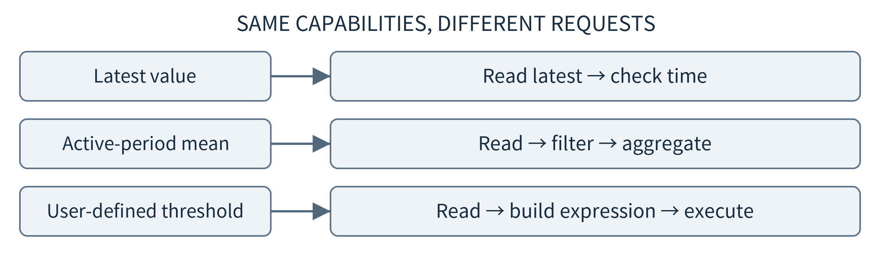
Figure 12.1. The same tools can support different task paths. A dynamic path does not require a different agent for every operation.
Begin by converting the user’s words into a small task contract: the entities and interval, the requested output, important definitions, and acceptance conditions. Ask when a missing detail can change the answer. “Count overheating events” is ambiguous: it could mean high samples, continuous runs, or separate episodes after a cooldown. The assistant should not quietly choose one and report it as the user’s definition. A clarification is a useful outcome when the alternative is a confidently executed wrong task.
The first version should support a small family of meaningful tasks rather than promise general autonomy. For a personal activity assistant, that might be comparing approved daily summaries and explaining missing wearable intervals. For inspection, it might be selecting batches for reanalysis and summarizing verified counts. Each family gives the developer a feasible evaluation set and a bounded set of tools. A changing request inside that family is still a genuine design challenge even without unrestricted browsing or arbitrary device control.
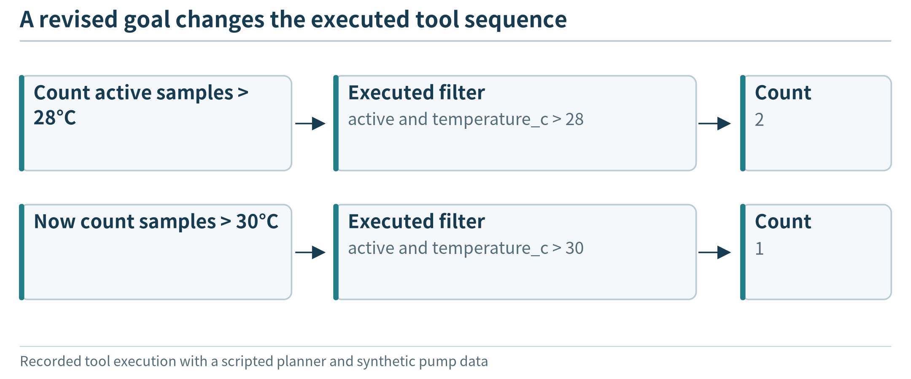
Figure 12.2. The executed tool sequence changes with the prepared request; the fixture validates runtime behavior, not learned planning capability.
12.2 Separate the model, runtime, tools, and data
Place four responsibilities on the architecture diagram. The model service proposes a next step or a response. The agent runtime maintains the conversation, dispatches tools, tracks budgets, and records progress. Tool services perform specific operations such as reading measurements, searching documents, or running an analysis. Data stores preserve observations, document versions, and completed results. These responsibilities may initially run as processes on one Linux edge device; they do not require four separate machines.
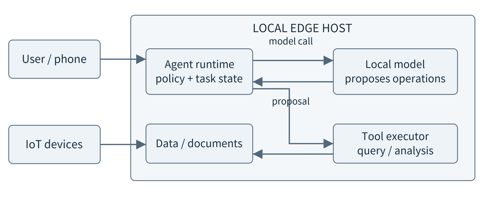
Figure 12.3. Physical placement and authority are separate. Sensors feed a local data path; the model proposes work through a runtime rather than directly reading every resource.
The user interface is a fifth, visible boundary. A phone can submit a question to a nearby host without running the model itself. A gateway can collect observations while a laptop performs analysis. State explicitly which functions are local to which node. If all services are on a single device, the same interfaces remain useful for later relocation. If they are split across hosts, each network request inherits the authentication, timeout, serialization, and failure questions already studied in the systems chapters.
The runtime receives the user identity from a trusted application boundary, not from a field the model generates. A tool may accept an asset identifier, but that identifier selects a resource rather than grants permission. The runtime and the data service check whether the authenticated principal can use it. Likewise, a model’s tool-call message is a proposal, not proof that a command has run. In a tool-calling API, the application executes the selected function and supplies a result message for a later model call. [83]
This separation also explains what the language model does not need. It need not know database credentials, retain a complete sensor history in context, or implement the numerical algorithm inside its generated prose. The runtime can hold credentials, data services can return compact authorized results, and ordinary programs can calculate values. The model remains useful because it can choose and compose these capabilities in response to the user’s objective.
12.3 Ground requests in local data and documents
12.3.1 Use structured queries for structured facts
An observation is not simply a number that can be pasted into a prompt. Reuse the IoT contract: source, entity, time, unit, value, and quality. Event identity supports duplicate handling, while observation time identifies the interval described. For planning, the model usually needs a compact catalog first: available fields, supported units, time coverage, and permitted operations. It does not need to read every event just to discover that a temperature field exists.
For a request such as “find the maximum during active periods,” a bounded structured query and a deterministic aggregate are a strong baseline. Similarity search over text descriptions of readings is not a substitute for selecting the correct interval and computing a maximum. The service should report the query scope and coverage along with its result. The absence of a row, a row marked invalid, and a measured zero should remain distinguishable.
Freeze the evidence used by a multi-step task. In the small laboratory, a content digest identifies one immutable synthetic dataset. In a live deployment, a database snapshot, versioned materialized view, or retained event-ID set can provide a repeatable view. Several services do not automatically share one atomic snapshot: the application may instead accept a stated time skew. Record that assumption. A new measurement arriving during generation must not silently change the meaning of an earlier comparison.
{"id":"pump-A:2", "asset":"pump-A", "slot":2,
"observed_at":"2026-01-15T08:02:00Z",
"temperature_c":29, "active":true, "quality":"valid"}
This record is synthetic and historical. Its slot is an index in the teaching fixture, not a substitute for a real timestamp. The assistant can use it to demonstrate filtering and execution, but cannot conclude what a real pump is doing now. The same rule applies when a device digital twin supplies state: preserve the state’s source and update time rather than treating the twin as an independent source of physical truth.
12.3.2 Retrieve document evidence without confusing similarity and truth
Manuals, maintenance notes, and operating instructions are a different data source. Retrieval-augmented generation supplies selected external passages to a model instead of expecting all relevant knowledge to be encoded in its parameters. The original RAG work connects retrieval with generation; in our application, the important architectural choice is keeping authoritative documents separately retrievable and versioned. Retrieval does not itself establish that the final interpretation is correct. [168]
A practical preparation path identifies documents, records access scope and revision, divides long text into useful passages, and builds a search representation. A small corpus can begin with lexical matching; an embedding index represents passages as vectors so that a related query can find semantically similar material. Index and query embeddings must use compatible models and preprocessing. Ollama documents a local embedding interface, but using it adds a model and index lifecycle that should be justified by a retrieval-quality comparison. [169]
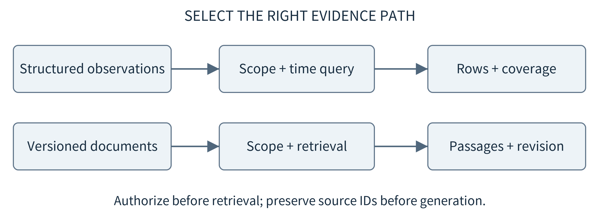
Figure 12.4. A time-series query and document retrieval produce different evidence. Both preserve identity, scope, and version before their results enter the model context.
Apply authorization before ranking or sending candidate passages to a model. Retrieving from every tenant and removing unauthorized citations at the end is too late if private text has already entered a prompt, cache, or log. Preserve document ID, revision, section, and the permitted excerpt in every result. A search score can order candidates; it does not show that a passage applies to this device revision or that a procedure is safe to execute.
The companion search tool deliberately uses lexical overlap over a few synthetic notes. Its test verifies that inaccessible notes never become candidates and that results retain revision information. It does not evaluate an embedding model or a real maintenance corpus. A later experiment can compare lexical, embedding, and combined retrieval using the same questions and ground-truth relevant passages. Report retrieval coverage separately from the quality of the generated answer.
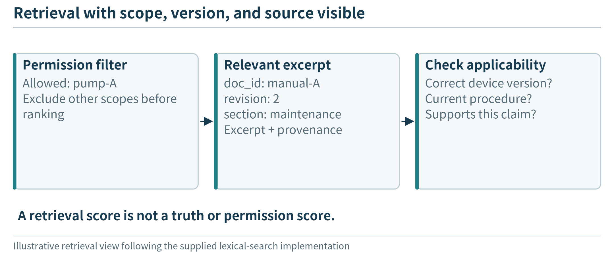
Figure 12.5. A relevant document can still be unauthorized or obsolete; the returned evidence preserves its scope and version.
12.3.3 Separate evidence, task memory, and model cache
The word memory hides several different stores. Source records and manuals contain evidence. Task state contains the goal, completed operations, accepted result identifiers, remaining budget, and unresolved questions. A model context is the subset currently sent to a model. A KV cache accelerates token processing within a model runtime; it is not the authoritative database or a durable record that a tool completed. Losing a KV cache may require recomputation, whereas losing the only accepted result record may make recovery ambiguous.
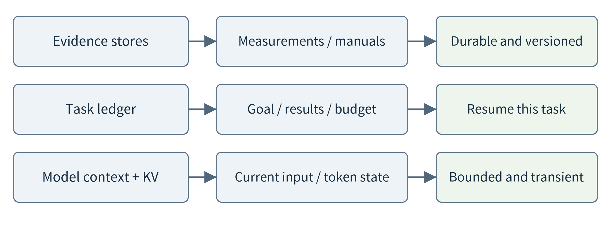
Figure 12.6. Evidence, durable task state, and transient model state have different meanings and lifetimes. Summarizing context must not silently redefine the task.
Keep hard constraints and result handles outside a free-form conversation summary. A summary such as “the pump data were checked” cannot replace the selected interval, coverage requirement, or returned result IDs. Compact old turns when necessary, but retain a structured list of outstanding obligations. Cross-session preferences require an explicit retention policy and current permission; a helpful assistant should not automatically keep every user question forever.
12.4 Turn a proposed plan into real tool execution
12.4.1 Describe tools by their contracts
A tool description tells the model what an operation means and what arguments it accepts. A tool implementation determines what actually happens. Keep a small, stable registry, such as catalog, read_series, search_manuals, run_analysis, clarify, and finish. The read tool should specify interval boundaries and units; the analysis tool should state its supported language and coverage definition. Ambiguous tool names or enormous all-purpose argument objects make planning harder to inspect.
Separate errors the model may repair from decisions it cannot override. A misspelled field can be corrected using the schema. A missing manual can lead to a clarification or a qualified answer. A denied data scope is not an invitation to try a different spelling until it succeeds. Tool responses should therefore include a typed status, useful evidence, and a concise error category rather than an unstructured stack trace containing secrets.
Model Context Protocol can standardize discovery and invocation when tools come from separate services. Its tool specification includes schemas and tool results, while the security guidance treats consent, authorization, and service trust as separate concerns. MCP does not supply the business policy, make a tool safe, or decide which node should execute it. This chapter’s small runtime calls functions directly; wrapping those functions in a protocol is an integration option, not a prerequisite for understanding the loop. [170, 171]
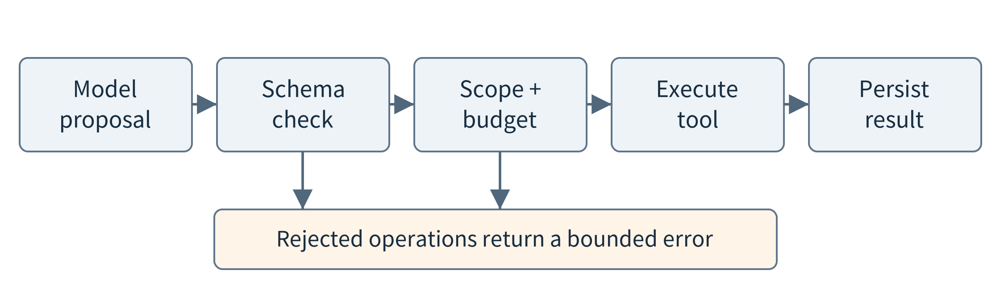
Figure 12.7. Tool availability and a valid argument schema are not sufficient authority. The execution path applies scope and budget checks before invoking the implementation.
12.4.2 Use results to choose the next operation
A minimal loop sends the current goal and permitted tool descriptions to the model, receives a proposed operation, validates it, executes it, and returns the outcome to the model. The model can then request another operation, ask for clarification, or propose a final answer. ReAct is an influential research example of interleaving reasoning and interaction; the transferable lesson here is using environmental feedback rather than treating an imagined execution as a result. The teaching interface exposes concise plans and actual calls, not private model reasoning traces. [82]
A complete plan may be useful, but do not require it to predict all future observations. The runtime can validate a short plan and execute one ready operation at a time. If a query reveals insufficient coverage, the next step may be to explain the gap rather than continue calculating. If two independent reads can run together, a later implementation can parallelize them. The first implementation intentionally uses one call per turn so that every dependency and failure is visible.
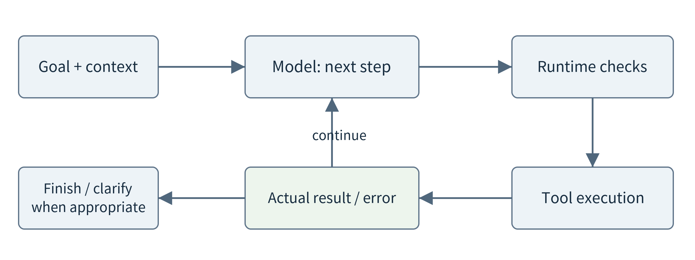
Figure 12.8. A proposal becomes evidence only after execution. An error returns through the same loop and consumes part of the finite task budget.
Stopping is part of the interface. A final response should refer to completed results, identify the interval described, and preserve qualifications such as missing observations. A clarification pauses the task rather than fabricates the missing requirement. A budget failure returns already verified facts when appropriate. Merely receiving a final sentence from a model is not sufficient: the application still checks its structure and references, and its evaluation process must check whether the task was actually satisfied.
12.4.3 Connect perception tools to changing goals
The perception models from Chapter 10 can become tools instead of being replaced by a language model. A classify_image operation might accept an authorized image handle and a model version, then return a label, scores, execution status, and source identity. A detect_objects operation needs a different output schema, such as boxes and class labels. The agent should not invent such outputs by describing what it expects an image to contain. The tool must actually run, or clearly identify a previously stored inference result.
Consider an inspection request: “Find batches with many uncertain labels, recheck two images from each, and explain whether the evidence is sufficient for manual review.” A first query identifies candidate batches using recorded scores and a stated criterion. Image handles are resolved by the data service, not interpreted as arbitrary file paths. The model then selects reanalysis operations and receives their real outputs. A report can compare old and new results while retaining both model versions. It cannot declare a defect merely because the planning model expected one.
This design exposes a distinction between task planning and model selection. Planning decides that a second view or a numerical comparison is useful. The model-service policy decides which approved perception model can satisfy that request under current resources. The two can exchange requirements without letting the planner name an uninstalled artifact or bypass the quality policy. It is also possible for the correct next step to be a database query rather than another inference. Each additional model call needs a purpose in the user’s task.
For a wearable assistant, equivalent tools can expose activity intervals and approved summaries rather than every raw motion sample. For a digital-twin application, a tool can read an entity’s timestamped state and relationships. Those are data-access and analysis tools; they do not automatically grant control over a physical device. The companion pump laboratory implements the structured-data version of this pattern. Adding a real perception tool is a targeted extension whose model accuracy and resource behavior should be tested separately.
12.5 Generate analysis programs without granting unrestricted execution
12.5.1 Choose an execution surface that matches the task
The model does not have to choose only complete, prewritten business functions. It can compose existing operations, generate a database query within a checked interface, or construct an analysis program. These choices offer different amounts of flexibility. A parameterized mean operation is easy to inspect but cannot express every new event definition. A general Python process is flexible but can also read files, open connections, allocate memory, and execute unintended work unless its environment restricts those capabilities.
Use three levels in a teaching design. First expose a few tested operations. Next allow a small expression language for user-defined filters and numerical transformations. Finally, when the task genuinely requires general code, send it to a separately managed analysis environment with explicit data mounts, resource limits, and a controlled output channel. Tool-mediated code execution is a systems boundary, not a special privilege earned because the code was generated by a model. The smolagents security documentation similarly distinguishes restricted local execution from stronger isolated execution options. [84]
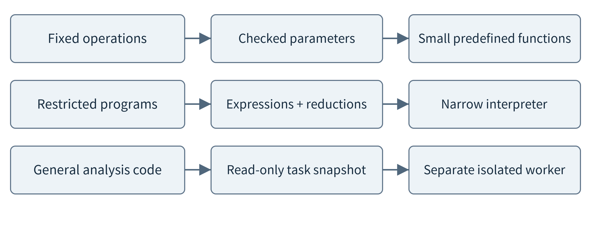
Figure 12.9. Expressiveness and execution authority should be designed separately. A restricted language is not a general Python interpreter with a warning in its prompt.
12.5.2 An inspectable restricted program
The companion program supports named fields, finite numeric literals, basic arithmetic, comparisons, and Boolean combinations. It interprets a checked syntax tree instead of calling Python eval or exec. Calls, imports, attributes, indexing, loops, and exponentiation are absent. Source length, syntax-tree size, nesting depth, and numeric magnitude are bounded. Python’s AST module supplies parsing, not a safety policy; its documentation warns that even seemingly limited parsing or literal evaluation can exhaust resources on hostile input. Our limits and narrow interpreter are part of the implementation, not properties automatically obtained by importing ast. [172]
{"series_id":"r0002",
"where":"active and temperature_c > 28",
"expression":"temperature_c", "reduce":"count",
"min_coverage":0.9}
This small program selects valid active samples above 28 degrees Celsius, evaluates a numerical expression on the selected rows, and counts them. Changing the threshold, adding a slot condition, or replacing the expression changes the computation without adding another complete business function. The runtime supplies the rows through a result handle, so the program does not open arbitrary database files. The configured coverage floor belongs to the job; the model cannot silently lower it to make an incomplete dataset pass.
The meaning remains limited. This program counts samples, not sustained events. Two adjacent high samples may belong to one episode. A request for an event lasting at least three minutes needs an ordering and duration rule that the small language does not implement. The correct response is to clarify, report the unsupported operation, or use a separately validated event tool. Quietly calling the count result an event count would be a semantic error even though the program executed correctly.
Check generated programs at three different levels. The syntax and capability check asks whether the program may execute. Small known examples ask whether its arithmetic and selection behave as intended. A task-level check asks whether that behavior matches the user’s definition. A program can pass the first two and still calculate the wrong statistic. Keep the program text, input snapshot, selected record IDs, interpreter version, and result together so that a student can inspect the whole claim.
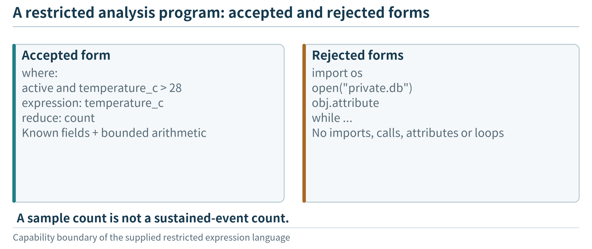
Figure 12.10. The restricted evaluator accepts a declared language over approved inputs; it does not execute arbitrary Python with a prompt warning.
12.5.3 When a full code environment is necessary
A general analysis environment should receive a bounded, read-only input snapshot and write only to a task-specific output area. Disable unnecessary network access and do not mount host credentials, device-control interfaces, or a container-engine socket. Set runtime, memory, process, output-size, and storage limits. Package approved libraries ahead of time rather than allowing generated code to install packages during execution. An application-level timeout is not enough if a worker keeps consuming resources after its caller stops waiting.
Containers are useful packaging and isolation mechanisms, but sharing a host kernel leaves a different boundary from a separate virtual machine or a sandboxed runtime. Docker’s security documentation and gVisor’s architecture help explain those distinctions. No short configuration should be presented as proof that arbitrary hostile programs are safe. This chapter supplies a reviewable execution design rather than claiming that the restricted-expression lab validates a production Python sandbox. [173, 174]
12.6 Follow a changing request through the system
Use a six-slot synthetic history to make every step inspectable. Each slot represents one minute beginning at 08:00 UTC on January 15, 2026. Pump-A has temperatures 24, 25, 29, 31, 28, and 26; pump-B has 22, 23, 25, a missing observation, 27, and 29. Both are marked active in slots 0–3. These are invented measurements for a software test, not a safe-operating example or a real machine trace.
Slot |
pump-A (°C) |
pump-B (°C) |
Active |
|---|---|---|---|
0 |
24 |
22 |
yes |
1 |
25 |
23 |
yes |
2 |
29 |
25 |
yes |
3 |
31 |
missing |
yes |
4 |
28 |
27 |
no |
5 |
26 |
29 |
no |
For the first request, count pump-A’s active samples above 28 degrees, requiring at least 90 percent coverage of the queried interval. A catalog call reveals fields and available data. A series call returns six rows and a result handle. The analysis program selects slots 2 and 3, so the count is 2. The final response cites the analysis result and explicitly calls it a sample count. The actual runtime executes the catalog, query, interpreter, and result validation; the default test planner supplies the proposed calls from a script.
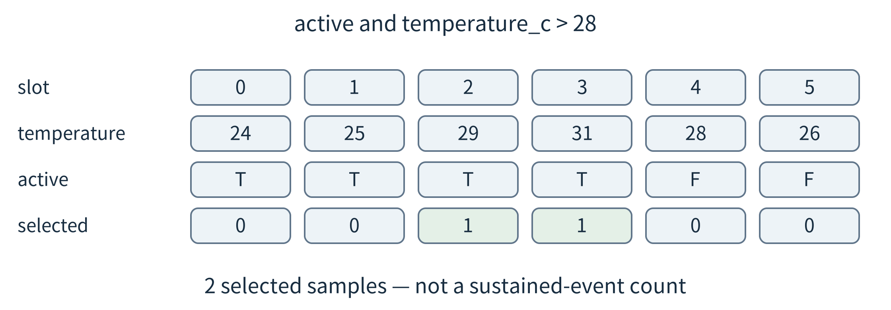
Figure 12.11. The selected rows explain the computed result. A changed threshold changes the mask, not the underlying evidence snapshot.
Now change the goal to the mean temperature during active periods. The same tools and dataset suffice, but the program uses where = active and reduce = mean. For pump-A, (24 + 25 + 29 + 31)/4 = 27.25 degrees Celsius. If the requested unit is Fahrenheit, the expression can become temperature_c × 1.8 + 32, producing 81.05 degrees Fahrenheit for the mean. Unit conversion is explicit computation, not a different wording of the same number.
Pump-B demonstrates why a fluent answer is not the success criterion. Its queried history has five valid temperatures out of six slots, or 83.33 percent coverage. Under the job’s 90 percent rule, the analysis returns insufficient_evidence with no mean. The three available active measurements do have a mean of 23.33 degrees, but presenting that value as an accepted comparison would violate the request. The lab defines coverage before the activity filter; a production task might require a different denominator. State that choice explicitly instead of treating coverage as a universal metric.
A permitted manual search may explain how the teaching procedure handles missing observations. It cannot supply the missing sensor value. The report should separate measured or computed facts, retrieved document statements, and model interpretation. If the user instead asks whether pump-A’s temperature caused a fault, neither this small table nor a relevant manual establishes causation. The assistant should explain the evidence limit or request a different investigation, not extend a successful arithmetic result into a diagnosis.
One repair case deliberately proposes the nonexistent field temp. The tool returns an error; a second proposal uses temperature_c and succeeds. This demonstrates that a feedback loop can carry and handle a repair. Because the planner is scripted, it does not demonstrate that a particular SLM learned the correction. Keeping those claims separate lets students test the execution system before conducting a real model-quality study.
12.7 Budget the whole task, not each individual call
Agentic flexibility changes the resource problem. A single user request can generate several model calls, queries, analysis jobs, and repair attempts. A fast local model call may still produce a slow task if the loop repeats many times. Measure a request from user submission to an accepted output, including queueing, retrieval, program execution, validation, and any remote communication. Keep the task’s admission delay separate from the execution of its components.
For a sequential task, an initial accounting model adds the non-overlapping stages. The number of rounds is itself a variable, so evaluate it alongside model size and placement. The formula is a bookkeeping aid, not a prediction that every tool has fixed duration.
T_task = T_admission + Σ(T_model + T_tool + T_transfer + T_check)
Consider an explicitly hypothetical six-second interactive budget. Initial preparation costs 0.4 s, a planning call 1.2 s, data retrieval 0.3 s, analysis 0.8 s, and a final check requires 0.2 s. This leaves 3.1 s for a remaining model call. Giving that call a fresh six-second timeout would violate the user’s budget. Reserve time for constructing a useful partial response, and do not start work that cannot plausibly finish within the remaining allowance.
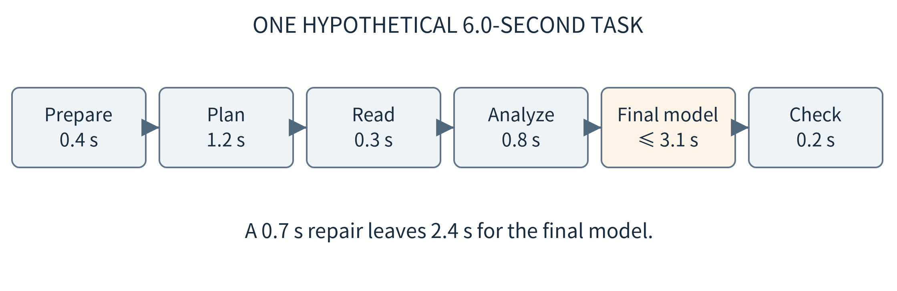
Figure 12.12. All rounds spend from one task budget. The widths are schematic; values are teaching assumptions, not measurements of a model or edge device.
Use several budgets rather than hiding every constraint in one price. Bound model calls, tool calls, generated tokens, context size, data released across a boundary, and concurrent analysis workers. A byte cap helps constrain a teaching message but is not a token-count guarantee. Use the deployed tokenizer for an actual context budget. Large document excerpts can displace the original task constraints even when they contain no useful evidence.
A persisted task deadline and in-process elapsed time serve different roles. A monotonic clock is appropriate for measuring elapsed execution within one process. A task that resumes after a restart also needs a durable expiry or conservatively recorded remaining allowance. The operating clock must be managed for a real deployment. The lab persists a wall-clock expiry and counters and tests restart behavior with an injected clock; it does not establish hard real-time scheduling under clock changes. [13]
Stopping a client wait does not prove that a remote model or worker stopped computing. Propagate cancellation when the interface supports it, and distinguish cancelled, timed out, and unknown outcomes. For local general-code workers, a supervisor must enforce the execution limit. For read-only queries, a late result may simply be discarded or archived; for operations with external effects, uncertainty requires stronger recovery rules rather than an automatic retry.
Parallel work can shorten a task but also increases peak demand. For a hypothetical plan with 0.4 s of planning, independent 0.6 s and 1.0 s reads, and 0.3 s of synthesis, the serial lower bound is 2.3 s and the parallel lower bound is 1.7 s. The saving assumes the reads really can overlap and do not slow each other. If both compete for one saturated resource, drawing parallel arrows does not make them parallel in practice.
12.7.1 Reduce avoidable work before adding more agents
Some improvements need no new model. Return a catalog once per valid version instead of on every turn. Keep large raw results in a result store and send a handle plus the fields needed for the next decision. Execute a verified arithmetic subroutine directly instead of repeatedly asking a model to calculate it. When the user’s accepted plan already determines two independent queries, the runtime can issue them together without asking the model to approve the obvious second step. Such shortcuts must preserve the declared task and permission checks.
Other shortcuts can change the answer. Reusing a cached manual excerpt after the device revision changes may select the wrong procedure. Summarizing a time series into a mean can erase the temporal order required for an episode question. Replacing a two-stage analysis with one enormous prompt can reduce call count while increasing context processing and making errors harder to locate. Measure complete successful tasks rather than optimizing the number of calls as an isolated target.
Treat the local agent and its tools as competing workloads on the same device. Loading a second model or running a large analysis job may reduce the resources available to data acquisition. Reserve capacity for essential functions and admit optional work only when the intended resource budget is available. A planner-generated task list is a demand proposal, not a resource reservation. This is where the application-level agent connects directly to the admission and scheduling mechanisms of Chapters 5–8.
12.8 Place planning, data access, and analysis across the continuum
A language model’s location does not determine every tool’s location. A small model on a phone may ask a nearby gateway to summarize a permitted sensor interval. A site model may query local records and ask a regional model for help with a difficult explanation. A remote planner may receive only a schema and an approved result rather than the raw history. Separate the placement of model inference, retrieval, code execution, and durable task state before optimizing any one of them.
Chapter 11 compared whole-request routing and model-level collaboration. Here the unit is an application step. Sending an entire conversation to a remote model may be unnecessary if a bounded subtask and selected evidence suffice. Conversely, repeatedly alternating between local and remote planning can add many dependent round trips. Count those exchanges and evaluate the quality of the final task, not only the cost of the isolated remote call. A private summary is still information release; “summarized” does not mean “non-sensitive.”
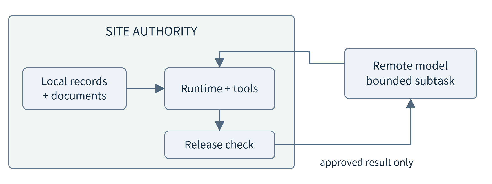
Figure 12.13. A local tool can enforce local data policy even when a separate model assists with a bounded subtask. The outbound result is checked independently of the incoming request.
When the wide-area link is unavailable, a useful local mode may still answer new questions using resident tools, documents, and a local model. It cannot retain a cloud-only capability merely by caching yesterday’s final answer. Specify the offline task family and the available model and document versions. A historical analysis may remain valid while a request for the latest remote manual must stop or report the retained version. Reconnection should not silently reinterpret a completed local result with newer inputs.
Multiple agents should have a concrete reason to exist: separate authority, specialized tools, different data ownership, or genuinely parallel subtasks. Start with a coordinator and bounded workers only when these distinctions help. Give each worker an input contract, a result contract, and a budget. Three copies of the same model repeating the same unsupported assumption do not create three independent pieces of evidence. Compare with one agent using the same tools and similar total computation.
Keep this application coordination distinct from infrastructure orchestration. A cluster manager starts and replaces the model or tool service; an agent runtime selects a query or analysis inside an admitted user task. Giving a planner the ability to choose a tool does not require giving it permission to deploy containers or change device credentials. The two layers can exchange load and health information without sharing administrative authority.
12.9 Recover tasks without confusing a retry with new work
12.9.1 Persist completed work and its meaning
An edge host may restart between a successful tool execution and the next model call. A chat transcript alone is a poor recovery record if it contains only “analysis started.” Save the accepted task, evidence snapshot, proposed operation and arguments, operation status, result identifiers, and consumed budget. A result should be durable before a later step treats it as completed evidence. LangGraph’s persistence documentation provides a framework example of checkpointed state; the broader principle applies even to a small custom runtime. [175]
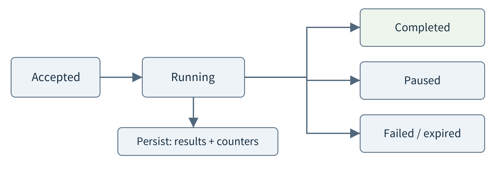
Figure 12.14. A task can pause, fail, expire, or complete. Persisted state identifies what may resume; a restart does not automatically grant a fresh budget.
The laboratory uses a single local SQLite database for the task ledger, operation records, and tool results. It commits a completed pure-tool result and its operation status in one transaction. SQLite’s atomic-commit mechanism supports that local boundary, under its storage assumptions; it does not make a separate network operation part of the transaction. The chapter’s restart test closes and reopens the process state after an injected failure. It is not a power-loss test on physical flash hardware. [177]
On resume, recheck the user and current access scope before returning cached evidence. A result handle is a locator, not a bearer credential. The original snapshot must still be available or the task must explicitly restart on a new one. Reusing a result from another user or silently mixing a new observation version with old results would make recovery fast but incorrect.
12.9.2 Name an operation across delivery attempts
Suppose an analysis finishes, the runtime commits its result, and the process stops before the model receives the response. Retrying with the same operation ID and the same canonical arguments can return the saved result. Reusing that ID with different arguments must be rejected. AWS’s discussion of idempotent APIs makes this distinction explicit: repeated delivery of one intended operation differs from a new operation, even when the payloads look similar. [176]
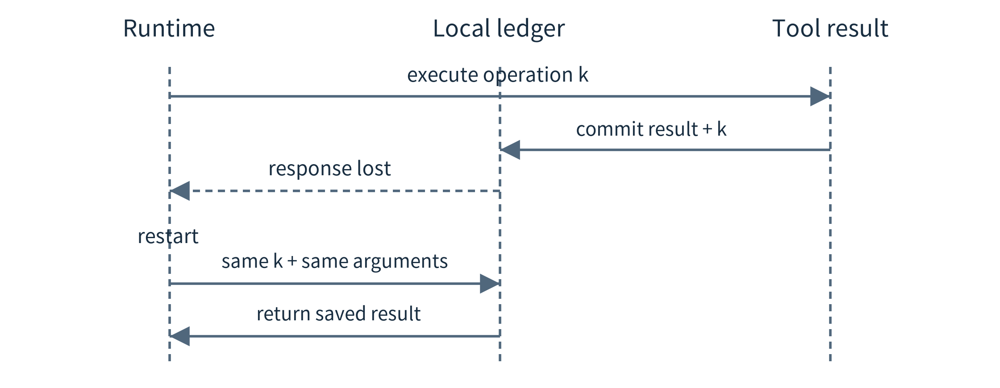
Figure 12.15. A lost response after commit does not require repeating the logical operation. The replay rule is limited to the recorded operation, arguments, snapshot, and current permission.
Pure analysis is easier to replay than physical action. If a read-only analysis was interrupted before its result committed, recomputing on the same immutable snapshot is acceptable in this example. If an external device already moved a valve, retrying may repeat a physical effect. A complete action design needs a device-supported command identity or acknowledgment query, current-state checks, authority, and a policy for unknown outcomes. A local database entry alone cannot create exactly-once effects at a remote actuator.
The supplied runtime therefore has no actuator tool. It tests replay after a committed result, retry before pure execution, changed arguments, changed snapshots, and revoked access. Its single-controller assumption is explicit. A distributed runtime with simultaneous coordinators additionally needs ownership and concurrent-update rules, but those mechanisms should be introduced only when the application needs them rather than copied into every beginner program.
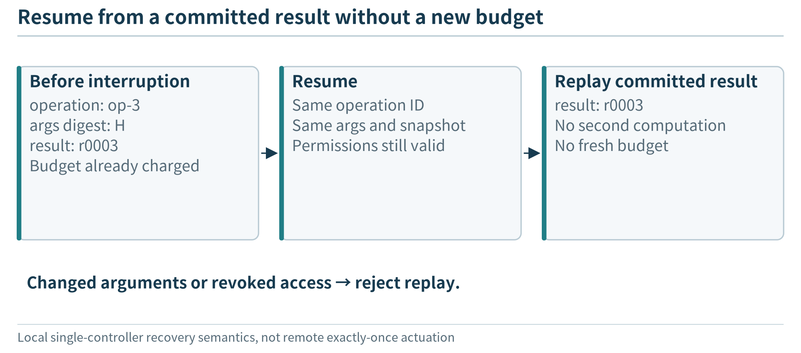
Figure 12.16. Recovery reuses committed work under current permission and the remaining task budget; it is not a fresh task.
12.10 Build the first tool-driven implementation
The implementation order should isolate causes of failure. First create a small immutable fixture and make the query and analysis tools work without a model. Next add the registry and result envelopes. Then put the tools behind a runtime that enforces identity, scope, and finite budgets. Only after those parts work should the model select calls. This is not a claim that a scripted planner is an intelligent system; it is a way to avoid debugging data access, arithmetic, persistence, and language-model behavior simultaneously.
# Architectural sketch; full checks are in the companion runtime.
while task.can_continue():
proposal = model.next(task.context(), permitted_tools)
operation = validate_and_authorize(proposal, task)
result = execute_with_budget(operation, task.remaining())
task.commit(operation, result)
if result.completes_or_pauses_task():
break
This sketch deliberately hides details behind named functions, but the actual implementation must supply them. A schema-valid tool call can contain an unauthorized asset; a valid analysis expression can ask for the wrong statistic; a final response with known references can still misstate a result. Programmatic checks enforce narrow properties. Test cases and task-level evaluation determine whether the assembled behavior satisfies the intended request.
The default command writes a persistent ledger, a machine-readable trace, and a browser-readable result. The trace names the planner mode as scripted_planner_test_double. A second script changes the analysis rule, exercises a missing-data case, injects an invalid field followed by a correction, and resumes a checkpoint. Students can inspect the records before attempting a real model. Avoid judging the tiny local tool-execution time as a prediction of full model-assisted latency.
python edge_agent.py --out results/first_run
python run_experiments.py --out results/study
python -m unittest -v test_edge_agent
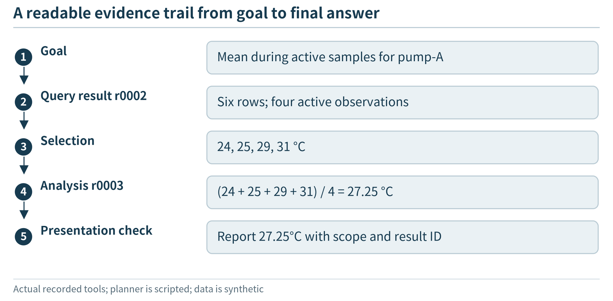
Figure 12.17. A trace establishes which operations ran; semantic checking still has to compare the final claim with their results.
Inspect the saved result rather than only the terminal status. In the count demonstration, r0001 is a catalog, r0002 is the six-row series, and r0003 is the completed analysis selecting pump-A:2 and pump-A:3. The final reply references r0003. On restart, result IDs remain attached to the same job and snapshot. They are not globally meaningful identifiers: another task may also have an r0003, so the lookup must include the job and current principal.
For an actual local model, start a trusted serving process and choose an installed artifact with tool-calling capability. The optional adapter reuses Chapter 11’s bounded loopback transport, checks the artifact listing, sends the tool schemas, and returns native tool-call proposals to the same runtime. It does not download models. A loopback address and an artifact name are useful checks, not proof that the daemon never uses a remote service. Test the required local task with the wide-area link disconnected, and record model version, context settings, calls, outputs, and hardware. [3, 83, 160]
# Optional: requires a separately installed local model.
python model_api.py --model LOCAL_MODEL --out results/local_model
The baseline allows one proposed tool call per turn and rejects unsupported response envelopes. This choice favors inspectability rather than maximum throughput. It can expose real model limitations: a model may return text instead of a required tool call, invent a tool name, or exceed a task budget. Record those as failures or improve the interface using development cases; do not silently replace a failed model output with a scripted success and still label the run as model-driven.
The laboratory principal is supplied by trusted local test configuration. It demonstrates authorization checks but does not implement a network login service. Document search is lexical, code execution is a restricted expression interpreter, and no full Python sandbox, MCP server, physical device, cloud worker, or live language model is exercised by the default tests. These boundaries identify exactly what a student must add and validate for a deployment, rather than hiding absent functionality behind the word agent.
12.11 Evaluate flexibility, correctness, and resource use together
An agent evaluation should include changed goals, not only different wording of one memorized task. Hold out combinations of entities, intervals, thresholds, transformations, and output requirements during development. Also include ambiguous requests and tasks that exceed permission or available evidence. A model that answers every question fluently but uses the wrong window has not demonstrated useful flexibility. A model that declines everything is also not useful; report completion and correctness separately.
Use three comparison conditions when possible: a fixed program for the known task family, one model with the same tools, and the proposed multi-step or multi-model design. Keep data, permissions, and acceptance criteria matched. If one approach gets additional repair calls or manual hints, account for them. For a small test set, show per-task outcomes and repeated model runs rather than reducing everything to one headline accuracy.
Evaluation layer |
Question |
Evidence |
|---|---|---|
Retrieval |
Were the required permitted records found? |
Relevant IDs, revision, coverage |
Execution |
Did the requested computation actually run? |
Arguments, program, result, status |
Task quality |
Did the output satisfy the original definition? |
Reference calculation and human rubric |
Resources |
What did the complete task consume? |
End-to-end time, calls, bytes, memory |
Recovery |
Was earlier accepted work reused correctly? |
Crash location, persisted state, replay |
Inject controlled failures at the interfaces: an inaccessible asset, malformed arguments, an expression with a forbidden operation, missing observations, a late response, and a restart after result commit. Place an instruction-like string inside a synthetic document and verify that the runtime cannot gain a new tool or a new data scope because of it. This tests an enforcement boundary, not proof that a model cannot be influenced. An influenced model can still produce a poor answer within its allowed tools, so task-quality evaluation remains necessary. [171]
The recorded exercises use actual local tools and a scripted planner. Their successful tests establish properties such as a correct computed count, rejection of unknown references, or reuse of a committed result. They do not establish a language model’s planning accuracy, latency, or resistance to prompt injection. The next stage is to run the same suite with a real, recorded model configuration and compare its outcomes with those already known from the tools. Preserve negative results: a simpler fixed workflow may be preferable for a stable task.
A deliberate negative control in the companion study returns a completed analysis value of 27.25, then proposes the sentence “The mean is 99 C” with the correct result ID. The narrow schema and provenance checks accept that envelope, while a direct comparison exposes the false claim. This is an observed limitation of the supplied validator, not a model failure: the false sentence is injected by the test. A deployment can render numeric facts directly from tool results, add specific claim checks, and evaluate remaining prose, but must not rename a reference check as semantic verification.
Chapter summary
An edge agent is a model-assisted application whose observations, tools, execution environment, state, and budgets must fit a real deployment. The model can choose new combinations of supported operations, but real work is performed and checked outside the generated text. Structured queries and document retrieval ground the task; constrained program execution adds flexibility; explicit budgets and durable result identities make multi-step work manageable. Locality can keep useful tasks available and reduce unnecessary data movement, while collaboration can add capability when permitted. Neither replaces measurement, evidence, or a well-defined task.
Exercises
12.1 A dashboard queries the latest value and asks a model to rewrite the output. A second application lets the model select a query and analysis operation. Explain the difference without claiming that either must be preferable.
12.2 Design a catalog entry for a wearable motion stream. Include time, units, availability and access scope, and state which fields a planner needs before reading raw samples.
12.3 A system retrieves the top ten passages across all tenants and removes unauthorized passages after generation. Identify the earliest unsafe boundary and redesign the retrieval path.
12.4 Why are a database snapshot, a persisted task record, and a KV cache not interchangeable forms of memory? Give a different recovery consequence for losing each.
12.5 For the synthetic table, evaluate active and temperature_c > 28 on pump-A. Explain why the answer does not establish a count of three-minute episodes.
12.6 For pump-B, calculate full-interval coverage and the mean of available active temperatures. Under a 90% full-interval coverage requirement, what should be returned?
12.7 A generated program is valid and returns 27.25. List checks still needed before the application claims it answered the user’s question.
12.8 Using the six-second task budget in Section 12.7, add a 0.7-second repair step. What remains for the final model call if the 0.2-second final check is preserved?
12.9 Compare serial and parallel execution of the two reads in Section 12.7. Name two reasons the predicted 0.6-second improvement might not be observed.
12.10 After a tool result commits, its response is lost. Design a retry record, including identity, arguments, snapshot and current permission. How does this differ for a physical action?
12.11 Design an offline mode for a field assistant with a local model, a cached manual, and an optional regional worker. Name one new request it can support and one it must qualify or refuse.
12.12 Compare one agent with tools against a coordinator plus two agents. Hold task requirements and total model-call allowance constant. What outcomes would justify the added coordination?
12.13 Run the scripted laboratory, change the threshold, and inject one rejected expression. Report tool results and rejection evidence without labeling the test as a real model evaluation.
12.14 Specify a held-out task suite that tests changes in intent rather than merely paraphrases. Include a missing-data case, a clarification, an unauthorized scope, and a restart.